Example
example.Rmd
library(bipartite)
library(sbm)
library(Rlab)
library(aricode)
library(pROC)
library(reshape2)
library(ggplot2)
library(gridExtra)
library(CoOPLBM)Simulation for 1 iteration
n1 = 100
n2 = 100
Q1 = 3
Q2 = 3
Q=Q1
P =matrix(c(0.95,0.75,0.5,
0.75,0.5,0.5,
0.5,0.5,0.05),Q1,Q2)
alpha1 = c(1/3,1/3,1/3)
alpha2 = c(1/3,1/3,1/3)
simulation1=simulate_lbm(P,alpha1,alpha2,n1,n2)
M = simulation1$A
Z1 =simulation1$Z
Z2 =simulation1$W
G= 300
lambda_i =rbeta(n1,0.3,1.5)
mu_j = rbeta(n2,0.3,1.5)
lambda_i = lambda_i/max(lambda_i)
mu_j = mu_j/max(mu_j)
N0=lambda_i%*%t(mu_j)*G
N=matrix(rpois(n1*n2,N0),nrow=n1)
R = M*N
obsrow = rowSums(R)>0
obscol = colSums(R)>0
R_obs = R[obsrow,obscol]
M_obs = M[obsrow,obscol]
Z1_obs = Z1[obsrow]
Z2_obs = Z2[obscol]
V = 1*(R_obs>0)
hist(lambda_i)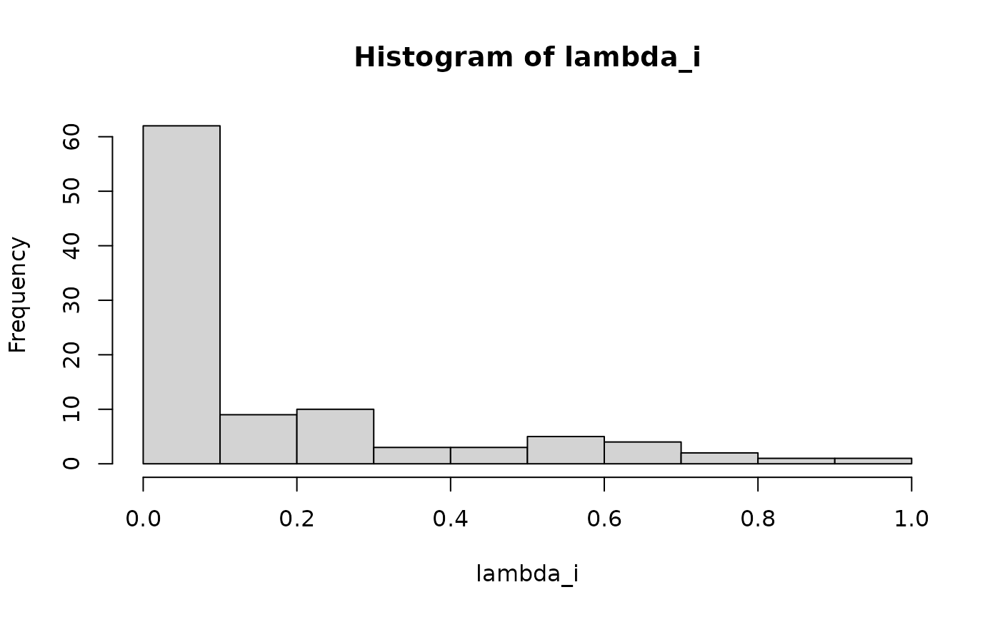
hist(mu_j)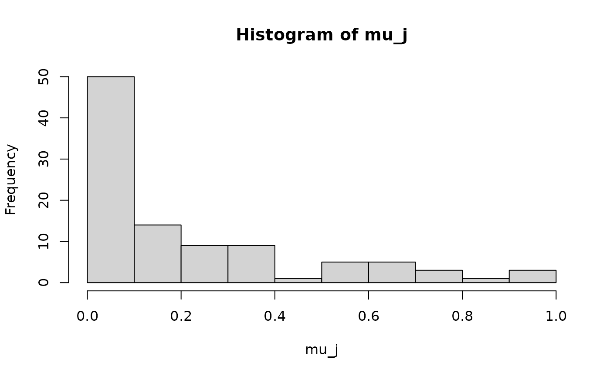
plotMyMatrix(M,clustering = list(row=Z1,col=Z2),plotOptions = list(line.width=1,title = "Complete matrix"))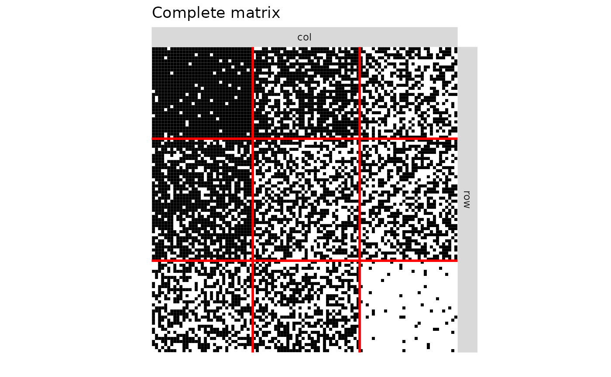
plotMyMatrix(V,clustering = list(row=Z1_obs,col=Z2_obs),plotOptions = list(line.width=1,title = "Observed matrix (binary)"))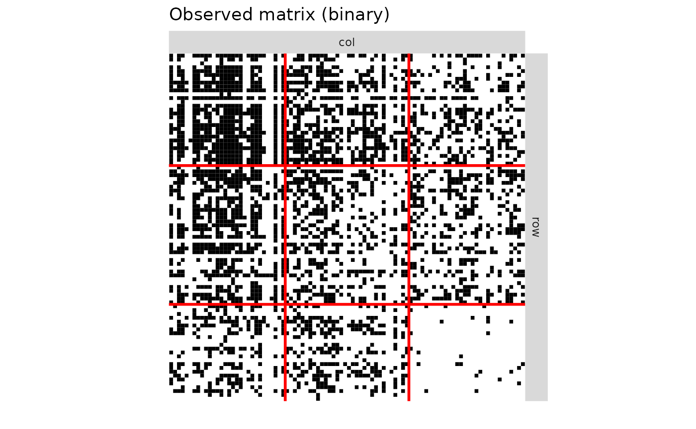
plotMyMatrix(R_obs,clustering = list(row=Z1_obs,col=Z2_obs),plotOptions = list(line.width=1,title = "Observed matrix"))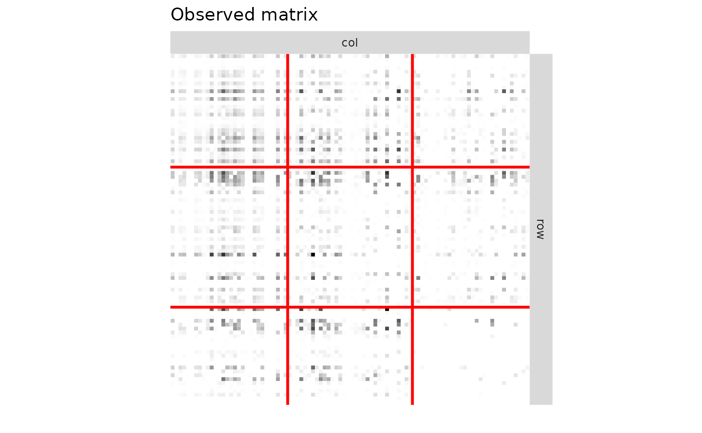
try1=fit_unsupervised_LBM(V,exploOptions = list(plot=FALSE,verbosity=F))
#> [1] "LBM : Best model has been fitted with 4-3 groups."
try2=fit_unsupervised_CoOP_LBM(R_obs,exploOptions = list(plot=F,verbosity=F),estimOptions = list(maxIter = 100))
#> [1] "CoOP-LBM : Best model has been fitted with 3-2 groups."
#Covariates for the Degree Corrected SBM
cov_row = lapply(2:nrow(V),function(k){
X = matrix(0,nrow(V),ncol(V))
X[k,] = 1
X
})
cov_col = lapply(2:ncol(V),function(k){
X = matrix(0,nrow(V),ncol(V))
X[,k] = 1
X
})
try3 = estimateBipartiteSBM(R_obs,model = "poisson",covariates = c(cov_row,cov_col),estimOptions = list(plot=F,verbosity=0,exploreMax = 10))
model1 = try1[[best_ICL(try1)]]
model2 = try2[[best_ICL(try2)]]
model3 = try3
print(paste("Degree-Corrected SBM : Best model has been fitted with ",try3$nbBlocks[1],"-",try3$nbBlocks[2]," groups.",sep=""))
#> [1] "Degree-Corrected SBM : Best model has been fitted with 5-5 groups."
#________________ARI SCORE________________
ARIL1=ARI(model1$cluster1,Z1_obs)
ARIC1=ARI(model1$cluster2,Z2_obs)
ARIL2=ARI(model2$cluster1,Z1_obs)
ARIC2=ARI(model2$cluster2,Z2_obs)
ARIL3 = ARI(model3$memberships[[1]],Z1_obs)
ARIC3 = ARI(model3$memberships[[2]],Z2_obs)
#________________COMPLETION OF MATRIX________________
V2 =V
V2[V2==0][sample(1:sum(V2==0),size = sum(M_obs)-sum(V),prob=model1$pi[model1$cluster1,model1$cluster2][V==0])]=1 #LBM
V3 = V
V3 =1*( runif(prod(dim(V)))< model2$connectivity_prob) #CoOP-LBM
V4 = V
V4[V4==0][sample(1:sum(V4==0),size = sum(M_obs)-sum(V))]=1 #Random˘
V5 =V
V5[V5==0][sample(1:sum(V5==0),size = sum(M_obs)-sum(V),prob=(1-exp(-fitted(model3)))[V==0])]=1 #DCSBM
#________________CONNECTIVITY________________
F1 = sum(R_obs==1)
F2 = sum(R_obs==2)
Connectivity_M = round(mean(M),3)
Connectivity_V = round(mean(V),3)
Connectivity_LBM = round(model1$alpha1%*%model1$pi%*%model1$alpha2,3)
Connectivity_CoOP = round(model2$alpha1%*%model2$pi%*%model2$alpha2,3)
Connectivity_DCSBM= round(model3$blockProp$row%*%(1-exp(-model3$connectParam$mean))%*%(model3$blockProp$col),3)
Chao =round(mean(V)/(1 - F1/sum(R_obs) * (sum(R_obs)-1)*F1/((sum(R_obs)-1)*F1+2*(F2+1))),3)
#________________COVERAGE________________
fL1 = rowSums(R_obs==1)
fL2 = rowSums(R_obs==2)
fC1 = colSums(R_obs==1)
fC2 = colSums(R_obs==2)
ChaoL = 1 - fL1/rowSums(R_obs) * (rowSums(R_obs)-1)*fL1/((rowSums(R_obs)-1)*fL1+2*(fL2+1))
ChaoC = 1 - fC1/colSums(R_obs) * (colSums(R_obs)-1)*fC1/((colSums(R_obs)-1)*fC1+2*(fC2+1))
ChaoL2 = rowSums(R_obs>0)/(estimateR(R_obs)["S.chao1",])
ChaoC2 = colSums(R_obs>0)/(estimateR(t(R_obs))["S.chao1",])
RMSE_chao_L = sqrt(mean((ChaoL-rowSums(R_obs>0)/rowSums(M[rowSums(R)>0,]))**2))
RMSE_chao_C = sqrt(mean((ChaoC-colSums(R_obs>0)/colSums(M[,colSums(R)>0]))**2))
RMSE_chao_L2 = sqrt(mean((ChaoL2-rowSums(R_obs>0)/rowSums(M[rowSums(R)>0,]))**2))
RMSE_chao_C2 = sqrt(mean((ChaoC2-colSums(R_obs>0)/colSums(M[,colSums(R)>0]))**2))
RMSE_CoOP_L = sqrt(mean((model2$row_coverage-rowSums(R_obs>0)/rowSums(M[rowSums(R)>0,]))**2))
RMSE_CoOP_C = sqrt(mean((model2$col_coverage-colSums(R_obs>0)/colSums(M[,colSums(R)>0]))**2))
#________________NESTEDNESS________________
NODF_M = round(NODF(M)$matrix,3)
NODF_V = round(NODF(V)$matrix,3)
NODF_LBM = round(NODF(V2)$matrix,3)
NODF_CoOP = round(NODF(V3)$matrix,3)
NODF_Random = round(NODF(V4)$matrix,3)
NODF_DCSBM = round(NODF(V5)$matrix,3)
#________________MODULARITY________________
MOD_M = round(NOS(M)$mod,3)
MOD_V = round(NOS(V)$mod,3)
MOD_LBM = round(NOS(V2)$mod,3)
MOD_CoOP = round(NOS(V3)$mod,3)
MOD_Random = round(NOS(V4)$mod,3)
MOD_DCSBM = round(NOS(V5)$mod,3)
#________________RMSE________________
RMSE_lambda = sqrt(mean((lambda_i[obsrow]-model2$lambda)**2))
RMSE_mu = sqrt(mean((mu_j[obscol]-model2$mu)**2))
RMSE_lambda_mu_G = sqrt(mean((N0[obsrow,obscol]-model2$lambda_mu_G)**2))
#________________AUC________________
proba_connect1 = model1$pi[model1$cluster1,model1$cluster2]
proba_connect1[V==1]=1
proba_connect2 = model2$connectivity_prob
proba_connect3 = 1-exp(-fitted(model3))
proba_connect3[V==1]=1
AUC_LBM = auc(roc(M_obs[V==0],proba_connect1[V==0],
direction="<",levels=levels(as.factor(c(0,1)))))
AUC_CoOP = auc(roc(M_obs[V==0],proba_connect2[V==0],
direction="<",levels=levels(as.factor(c(0,1)))))
AUC_DCSBM = auc(roc(M_obs[V==0],proba_connect3[V==0],
direction="<",levels=levels(as.factor(c(0,1)))))
#________________PRINT________________
print(paste0("Q1 | LBM = ",dim(model1$pi)[1]," | CoOP-LBM = ",dim(model2$pi)[1]," | DCSBM = ",model3$nbBlocks[1]))
#> [1] "Q1 | LBM = 4 | CoOP-LBM = 3 | DCSBM = 5"
print(paste0("Q2 | LBM = ",dim(model1$pi)[2]," | CoOP-LBM = ",dim(model2$pi)[2]," | DCSBM = ",model3$nbBlocks[2]))
#> [1] "Q2 | LBM = 3 | CoOP-LBM = 2 | DCSBM = 5"
print(paste0("row ARI | LBM = ",round(ARIL1,3)," | CoOP-LBM = ",round(ARIL2,3)," | DCSBM = ",round(ARIL3,3)))
#> [1] "row ARI | LBM = 0.41 | CoOP-LBM = 0.812 | DCSBM = 0.243"
print(paste0("col ARI | LBM = ",round(ARIC1,3)," | CoOP-LBM = ",round(ARIC2,3)," | DCSBM = ",round(ARIC3,3)))
#> [1] "col ARI | LBM = 0.274 | CoOP-LBM = 0.487 | DCSBM = 0.216"
print(paste0("Connectivity | Complete matrix = " ,Connectivity_M ," | Observed matrix = ", Connectivity_V , " | LBM = ",Connectivity_LBM," | CoOP-LBM = ",Connectivity_CoOP," | Chao = ",Chao," | DCSBM = ",Connectivity_DCSBM ) )
#> [1] "Connectivity | Complete matrix = 0.579 | Observed matrix = 0.353 | LBM = 0.353 | CoOP-LBM = 0.578 | Chao = 0.356 | DCSBM = 0.935"
print(paste0("RMSE of row coverage | Chao cov = " ,round(RMSE_chao_L,3),"| Chao abund = ",round(RMSE_chao_L2,3) ," | CoOP-LBM = ", round(RMSE_CoOP_L,3) ))
#> [1] "RMSE of row coverage | Chao cov = 0.353| Chao abund = 0.353 | CoOP-LBM = 0.053"
print(paste0("RMSE of column coverage | Chao = " ,round(RMSE_chao_C,3) ,"| Chao abund = ",round(RMSE_chao_C2,3)," | CoOP-LBM = ", round(RMSE_CoOP_C,3) ))
#> [1] "RMSE of column coverage | Chao = 0.398| Chao abund = 0.373 | CoOP-LBM = 0.074"
print(paste0("NODF | Complete matrix = " ,NODF_M," | Observed matrix = ", NODF_V , " | LBM = ",NODF_LBM," | CoOP-LBM = ",NODF_CoOP," | DCSBM = ",NODF_DCSBM," | Random = ", NODF_Random ) )
#> [1] "NODF | Complete matrix = 0.73 | Observed matrix = 0.604 | LBM = 0.828 | CoOP-LBM = 0.729 | DCSBM = 0.864 | Random = 0.668"
print(paste0("Modularity | Complete matrix = " ,MOD_M ," | Observed matrix = ", MOD_V , " | LBM = ",MOD_LBM," | CoOP-LBM = ",MOD_CoOP," | DCSBM = ", MOD_DCSBM," | Random = ",MOD_Random ) )
#> [1] "Modularity | Complete matrix = 0.209 | Observed matrix = 0.443 | LBM = 0.238 | CoOP-LBM = 0.21 | DCSBM = 0.286 | Random = 0.158"
print(paste0("Estimated G : ",round(model2$G,3)))
#> [1] "Estimated G : 304.589"
print(paste0("RMSE | Lambda = ",round(RMSE_lambda,3)," | Mu = ",round(RMSE_mu,3)))
#> [1] "RMSE | Lambda = 0.008 | Mu = 0.012"
print(paste0("RMSE | Lambda x Mu x G = ",round(RMSE_lambda_mu_G,3)))
#> [1] "RMSE | Lambda x Mu x G = 1.269"
print(paste0("AUC | LBM = ",round(AUC_LBM,3)," | CoOP-LBM = ",round(AUC_CoOP,3)," | DCSBM = ",round(AUC_DCSBM,3) ))
#> [1] "AUC | LBM = 0.327 | CoOP-LBM = 0.877 | DCSBM = 0.248"
par(pty="s")
plot(lambda_i[obsrow],model2$lambda,main = "Lambda",xlab = "Theoretical",ylab="Estimated")
abline(0,1,lty=2)
plot(N0[obsrow,obscol],model2$lambda_mu_G,main = "Lambda Mu G",xlab = "Theoretical",ylab="Estimated")
abline(0,1,lty=2)
plotMyMatrix(V,clustering = list(row=model1$cluster1,col=model1$cluster2),plotOptions = list(title="LBM clustering",line.width=1))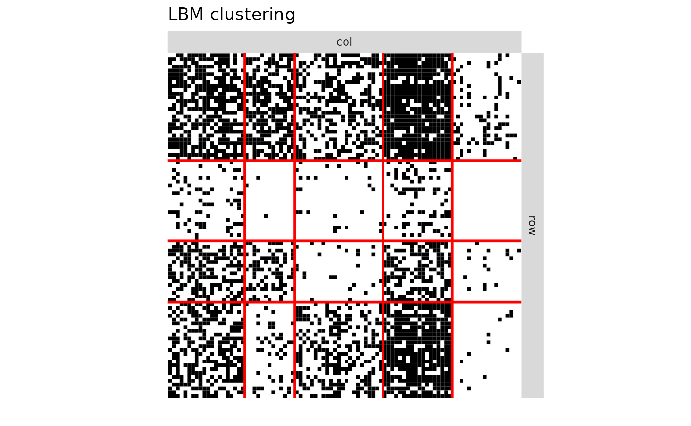
plotMyMatrix(V,clustering = list(row=model2$cluster1,col=model2$cluster2),plotOptions = list(title="CoOP-LBM clustering",line.width=1))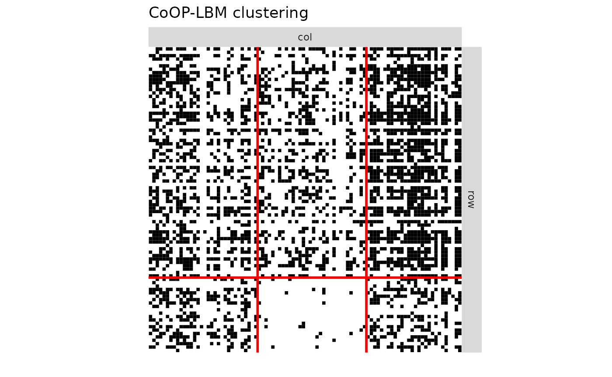
plotMyMatrix(V,clustering = list(row=model3$memberships$row,col=model3$memberships$col),plotOptions = list(title="DCSBM clustering",line.width=1))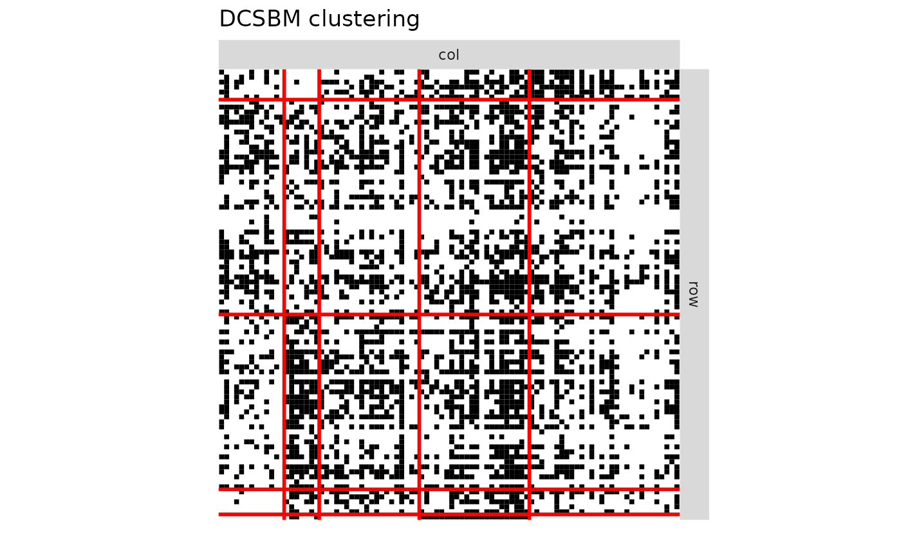
plotMyMatrix(proba_connect1,clustering = list(row=Z1_obs,col=Z2_obs),plotOptions = list(title="LBM probabilities of missing interaction",line.width=1))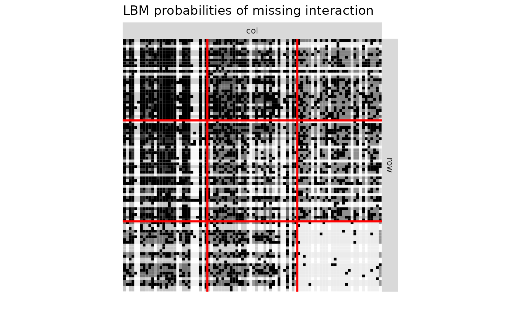
plotMyMatrix(proba_connect2,clustering = list(row=Z1_obs,col=Z2_obs),plotOptions = list(title="CoOP-LBM probabilities of missing interaction",line.width=1))
plotMyMatrix(proba_connect3,clustering = list(row=Z1_obs,col=Z2_obs),plotOptions = list(title="DCSBM probabilities of missing interaction",line.width=1))
Simulation for K iterations
n1 = 100
n2 = 100
Q1 = 3
Q2 = 3
P =matrix(c(0.95,0.75,0.5,
0.75,0.5,0.5,
0.5,0.5,0.05),Q1,Q2)
alpha1 = c(1/3,1/3,1/3)
alpha2 = c(1/3,1/3,1/3)
result = data.frame(Q1_LBM=numeric(),
Q2_LBM=numeric(),
Q1_CoOP= numeric(),
Q2_CoOP= numeric(),
Q1_DCSBM= numeric(),
Q2_DCSBM= numeric(),
ARI_row_LBM=numeric(),
ARI_col_LBM=numeric(),
ARI_row_CoOP = numeric(),
ARI_col_CoOP = numeric(),
ARI_row_DCSBM = numeric(),
ARI_col_DCSBM = numeric(),
Connectivity_M = numeric(),
Connectivity_V = numeric(),
Connectivity_LBM = numeric(),
Connectivity_CoOP = numeric(),
Connectivity_Chao = numeric(),
Connectivity_Chao1 = numeric(),
Connectivity_DCSBM = numeric(),
RMSE_chao_row_coverage= numeric(),
RMSE_chao_col_coverage= numeric(),
RMSE_chao1_row_coverage= numeric(),
RMSE_chao1_col_coverage= numeric(),
RMSE_CoOP_row_coverage= numeric(),
RMSE_CoOP_col_coverage= numeric(),
NODF_M = numeric(),
NODF_V= numeric(),
NODF_LBM = numeric(),
NODF_CoOP= numeric(),
NODF_DCSBM= numeric(),
NODF_Random= numeric(),
MOD_M = numeric(),
MOD_V= numeric(),
MOD_LBM = numeric(),
MOD_CoOP= numeric(),
MOD_DCSBM= numeric(),
MOD_Random= numeric(),
rob_M = numeric(),
rob_LBM = numeric(),
rob_LBM_corrected = numeric(),
rob_CoOP = numeric(),
#rob_DCSBM = numeric(),
G = numeric(),
G_CoOP = numeric(),
RMSE_lambda=numeric(),
RMSE_mu = numeric(),
RMSE_lambda_mu_G = numeric(),
AUC_LBM = numeric(),
AUC_CoOP = numeric(),
AUC_DCSBM = numeric()
)
list_G = c(25,100,200,300,400,500,600) ### CHANGE THE LIST TO CHANGE THE EXPLORATION OF G
K = 10 # NUMBER OF ITERATION FOR EACH G
print_result = FALSE # CHANGE TO TRUE IF YOU WANT TO PRINT RESULT AT EACH ITERATION
for (G in list_G){
for (k in 1:K){
print(k)
simulation1=simulate_lbm(P,alpha1,alpha2,n1,n2)
M = simulation1$A
Z1 =simulation1$Z
Z2 =simulation1$W
lambda_i =rbeta(n1,0.3,1.5)
mu_j = rbeta(n2,0.3,1.5)
lambda_i = lambda_i/max(lambda_i)
mu_j = mu_j/max(mu_j)
N0=lambda_i%*%t(mu_j)*G
N=matrix(rpois(n1*n2,N0),nrow=n1)
R = M*N
obsrow = rowSums(R)>0
obscol = colSums(R)>0
R_obs = R[obsrow,obscol]
M_obs = M[obsrow,obscol]
Z1_obs = Z1[obsrow]
Z2_obs = Z2[obscol]
V = 1*(R_obs>0)
try1=fit_unsupervised_LBM(V,exploOptions = list(plot=FALSE,verbosity=F))
try2=fit_unsupervised_CoOP_LBM(R_obs,exploOptions = list(plot=F,verbosity=F))
cov_row = lapply(2:nrow(V),function(k){
X = matrix(0,nrow(V),ncol(V))
X[k,] = 1
X
})
cov_col = lapply(2:ncol(V),function(k){
X = matrix(0,nrow(V),ncol(V))
X[,k] = 1
X
})
try3 = estimateBipartiteSBM(R_obs,model = "poisson",covariates = c(cov_row,cov_col),estimOptions = list(plot=F,verbosity=0,exploreMax = 10))
model1 = try1[[best_ICL(try1)]]
model2 = try2[[best_ICL(try2)]]
model3 = try3
#________________ARI SCORE________________
ARIL1=ARI(model1$cluster1,Z1_obs)
ARIC1=ARI(model1$cluster2,Z2_obs)
ARIL2=ARI(model2$cluster1,Z1_obs)
ARIC2=ARI(model2$cluster2,Z2_obs)
ARIL3 = ARI(model3$memberships[[1]],Z1_obs)
ARIC3 = ARI(model3$memberships[[2]],Z2_obs)
#________________COMPLETION OF MATRIX________________
V2 =V
V2[V2==0][sample(1:sum(V2==0),size = sum(M_obs)-sum(V),prob=model1$pi[model1$cluster1,model1$cluster2][V==0])]=1 #LBM
V3 = V
V3 =1*( runif(prod(dim(V)))< model2$connectivity_prob) #CoOP-LBM
V4 = V
V4[V4==0][sample(1:sum(V4==0),size = sum(M_obs)-sum(V))]=1 #Random˘
V5 =V
V5[V5==0][sample(1:sum(V5==0),size = sum(M_obs)-sum(V),prob=(1-exp(-fitted(model3)))[V==0])]=1 #DCSBM
#________________CONNECTIVITY________________
F1 = sum(R_obs==1)
F2 = sum(R_obs==2)
Connectivity_M = round(mean(M),3)
Connectivity_V = round(mean(V),3)
Connectivity_LBM = round(model1$alpha1%*%model1$pi%*%model1$alpha2,3)
Connectivity_CoOP = round(model2$alpha1%*%model2$pi%*%model2$alpha2,3)
Connectivity_DCSBM= round(mean(1-exp(-fitted(model3))),3)
Chao =round(mean(V)/(1 - F1/sum(R_obs) * (sum(R_obs)-1)*F1/((sum(R_obs)-1)*F1+2*(F2+1))),3)
Chao1 = round(estimateR(c(R_obs))["S.chao1"]/(prod(dim(R_obs))),3)
#________________COVERAGE________________
fL1 = rowSums(R_obs==1)
fL2 = rowSums(R_obs==2)
fC1 = colSums(R_obs==1)
fC2 = colSums(R_obs==2)
ChaoL = 1 - fL1/rowSums(R_obs) * (rowSums(R_obs)-1)*fL1/((rowSums(R_obs)-1)*fL1+2*(fL2+1)) #coverage estimator
ChaoC = 1 - fC1/colSums(R_obs) * (colSums(R_obs)-1)*fC1/((colSums(R_obs)-1)*fC1+2*(fC2+1))
ChaoL2 = rowSums(R_obs>0)/(estimateR(R_obs)["S.chao1",]) #species chao 1 estimator
ChaoC2 = colSums(R_obs>0)/(estimateR(t(R_obs))["S.chao1",])
RMSE_chao_L = sqrt(mean((ChaoL-rowSums(R_obs>0)/rowSums(M[rowSums(R)>0,]))**2))
RMSE_chao_C = sqrt(mean((ChaoC-colSums(R_obs>0)/colSums(M[,colSums(R)>0]))**2))
RMSE_chao1_L = sqrt(mean((ChaoL2-rowSums(R_obs>0)/rowSums(M[rowSums(R)>0,]))**2))
RMSE_chao1_C = sqrt(mean((ChaoC2-colSums(R_obs>0)/colSums(M[,colSums(R)>0]))**2))
RMSE_CoOP_L = sqrt(mean((model2$row_coverage-rowSums(R_obs>0)/rowSums(M[rowSums(R)>0,]))**2))
RMSE_CoOP_C = sqrt(mean((model2$col_coverage-colSums(R_obs>0)/colSums(M[,colSums(R)>0]))**2))
#________________NESTEDNESS________________
NODF_M = round(NODF(M)$matrix,3)
NODF_V = round(NODF(V)$matrix,3)
NODF_LBM = round(NODF(V2)$matrix,3)
NODF_CoOP = round(NODF(V3)$matrix,3)
NODF_Random = round(NODF(V4)$matrix,3)
NODF_DCSBM = round(NODF(V5)$matrix,3)
#________________MODULARITY________________
MOD_M = round(NOS(M)$mod,3)
MOD_V = round(NOS(V)$mod,3)
MOD_LBM = round(NOS(V2)$mod,3)
MOD_CoOP = round(NOS(V3)$mod,3)
MOD_Random = round(NOS(V4)$mod,3)
MOD_DCSBM = round(NOS(V5)$mod,3)
#________________ROBUSTNESS________________
rob0= round(robustness_lbm(con = P,pi = c(1/3,1/3,1/3),rho = c(1/3,1/3,1/3),nr = 100,nc = 100)$auc,3)
rob1 = round(robustness_lbm(con =model1$pi,pi = model1$alpha1,rho =model1$alpha2,nr =dim(V)[1],nc = dim(V)[2])$auc,3)
P_LBM = model1$pi*mean(M)/mean(V)
P_LBM[P_LBM>1]=1
rob1.2 = round(robustness_lbm(con =P_LBM,pi = model1$alpha1,rho =model1$alpha2,nr =dim(V)[1],nc = dim(V)[2])$auc,3)
rob2 = round(robustness_lbm(con =model2$pi,pi = model2$alpha1,rho =model2$alpha2,nr =dim(V)[1],nc = dim(V)[2])$auc,3)
#rob3 = round(robustness_lbm(con =model3$connectParam$mean,pi = model3$blockProp$row,rho =model3$blockProp$col,nr =dim(V)[1],nc = dim(V)[2])$auc,3)
#________________RMSE________________
RMSE_lambda = sqrt(mean((lambda_i[obsrow]-model2$lambda)**2))
RMSE_mu = sqrt(mean((mu_j[obscol]-model2$mu)**2))
RMSE_lambda_mu_G = sqrt(mean((N0[obsrow,obscol]-model2$lambda_mu_G)**2))
#________________AUC________________
proba_connect1 = model1$pi[model1$cluster1,model1$cluster2]
proba_connect2 = model2$connectivity_prob
proba_connect3 = 1-exp(-fitted(model3))
AUC_LBM = auc(roc(M_obs[V==0],proba_connect1[V==0],
direction="<",levels=levels(as.factor(c(0,1)))))
AUC_CoOP = auc(roc(M_obs[V==0],proba_connect2[V==0],
direction="<",levels=levels(as.factor(c(0,1)))))
AUC_DCSBM = auc(roc(M_obs[V==0],proba_connect3[V==0],
direction="<",levels=levels(as.factor(c(0,1)))))
#________________PRINT________________
if (print_result){
print(paste0("Q1 | LBM = ",dim(model1$pi)[1]," | CoOP-LBM = ",dim(model2$pi)[1]," | DCSBM = ",model3$nbBlocks[1]))
print(paste0("Q2 | LBM = ",dim(model1$pi)[2]," | CoOP-LBM = ",dim(model2$pi)[2]," | DCSBM = ",model3$nbBlocks[2]))
print(paste0("row ARI | LBM = ",round(ARIL1,3)," | CoOP-LBM = ",round(ARIL2,3)," | DCSBM = ",round(ARIL3,3)))
print(paste0("col ARI | LBM = ",round(ARIC1,3)," | CoOP-LBM = ",round(ARIC2,3)," | DCSBM = ",round(ARIC3,3)))
print(paste0("Connectivity | Complete matrix = " ,Connectivity_M ," | Observed matrix = ", Connectivity_V , " | LBM = ",Connectivity_LBM," | CoOP-LBM = ",Connectivity_CoOP," | Chao = ",Chao," | DCSBM = ",Connectivity_DCSBM ) )
print(paste0("RMSE of row coverage | Chao cov = " ,round(RMSE_chao_L,3),"| Chao abund = ",round(RMSE_chao_L2,3) ," | CoOP-LBM = ", round(RMSE_CoOP_L,3) ))
print(paste0("RMSE of column coverage | Chao = " ,round(RMSE_chao_C,3) ,"| Chao abund = ",round(RMSE_chao_C2,3)," | CoOP-LBM = ", round(RMSE_CoOP_C,3) ))
print(paste0("NODF | Complete matrix = " ,NODF_M," | Observed matrix = ", NODF_V , " | LBM = ",NODF_LBM," | CoOP-LBM = ",NODF_CoOP," | DCSBM = ",NODF_DCSBM," | Random = ", NODF_Random ) )
print(paste0("Modularity | Complete matrix = " ,MOD_M ," | Observed matrix = ", MOD_V , " | LBM = ",MOD_LBM," | CoOP-LBM = ",MOD_CoOP," | DCSBM = ", MOD_DCSBM," | Random = ",MOD_Random ) )
print(paste0("Estimated G : ",round(model2$G,3)))
print(paste0("RMSE | Lambda = ",round(RMSE_lambda,3)," | Mu = ",round(RMSE_mu,3)))
print(paste0("RMSE | Lambda x Mu x G = ",round(RMSE_lambda_mu_G,3)))
print(paste0("AUC | LBM = ",round(AUC_LBM,3)," | CoOP-LBM = ",round(AUC_CoOP,3)," | DCSBM = ",round(AUC_DCSBM,3) ))
print("##########")
}
result[nrow(result)+1,] = c(dim(model1$pi)[1],
dim(model1$pi)[2],
dim(model2$pi)[1],
dim(model2$pi)[2],
model3$nbBlocks[1],
model3$nbBlocks[2],
ARIL1,
ARIC1,
ARIL2,
ARIC2,
ARIL3,
ARIC3,
Connectivity_M,
Connectivity_V,
Connectivity_LBM,
Connectivity_CoOP,
Chao,
Chao1,
Connectivity_DCSBM,
RMSE_chao_L,
RMSE_chao_C,
RMSE_chao1_L,
RMSE_chao1_C,
RMSE_CoOP_L,
RMSE_CoOP_C,
NODF_M,
NODF_V,
NODF_LBM,
NODF_CoOP,
NODF_DCSBM,
NODF_Random,
MOD_M,
MOD_V,
MOD_LBM,
MOD_CoOP,
MOD_DCSBM,
MOD_Random,
rob0,
rob1,
rob1.2,
rob2,
#rob3,
G,
model2$G,
RMSE_lambda,
RMSE_mu,
RMSE_lambda_mu_G,
AUC_LBM,
AUC_CoOP,
AUC_DCSBM)
}}
#> Warning in sqrt(sum(Deriv.Ch1 %*% t(Deriv.Ch1) * (diag(a) - a %*%
#> t(a)/S.ACE))): NaNs produced
df1 = result[c("G","ARI_row_LBM","ARI_row_CoOP","ARI_row_DCSBM")]
df1_long <- melt(df1, id.vars=c("G"))
p1 <- ggplot(df1_long, aes(x=factor(G),y=value,fill=variable))+
geom_boxplot() + theme(legend.position = "bottom",axis.text.x = element_text(angle = 90, vjust = 0.5, hjust=1)) + ggtitle("ARI for row clustering")+ labs(y="ARI",x="G")+scale_fill_discrete(labels = c("LBM","CoOP-LBM","DCSBM"))+ guides(fill=guide_legend(title=""))
df2 = result[c("G","ARI_col_LBM","ARI_col_CoOP","ARI_col_DCSBM")]
df2_long <- melt(df2, id.vars=c("G"))
p2 <- ggplot(df2_long, aes(x=factor(G),y=value,fill=variable))+
geom_boxplot() + theme(legend.position = "bottom",axis.text.x = element_text(angle = 90, vjust = 0.5, hjust=1)) + ggtitle("ARI for column clustering")+ labs(y="",x="G")+scale_fill_discrete(labels = c("LBM","CoOP-LBM","DCSBM")) + guides(fill=guide_legend(title=""))
grid.arrange(p1,p2,ncol=2)
tbl1 <- with(result, table(Q1_LBM, G))
p3=ggplot(as.data.frame(tbl1), aes(factor(G), Freq, fill = Q1_LBM)) +
theme(axis.text.x = element_text(angle = 90, vjust = 0.5, hjust=1))+labs(x="G")+
geom_col(position = 'stack')
tbl2 <- with(result, table(Q2_LBM, G))
p4=ggplot(as.data.frame(tbl2), aes(factor(G), Freq, fill = Q2_LBM)) +
theme(axis.text.x = element_text(angle = 90, vjust = 0.5, hjust=1))+labs(x="G")+
geom_col(position = 'stack')
tbl3 <- with(result, table(Q1_CoOP, G))
p5=ggplot(as.data.frame(tbl3), aes(factor(G), Freq, fill = Q1_CoOP)) +
theme(axis.text.x = element_text(angle = 90, vjust = 0.5, hjust=1))+labs(x="G")+
geom_col(position = 'stack')
tbl4 <- with(result, table(Q2_CoOP, G))
p6=ggplot(as.data.frame(tbl4), aes(factor(G), Freq, fill = Q2_CoOP)) +
theme(axis.text.x = element_text(angle = 90, vjust = 0.5, hjust=1))+labs(x="G")+
geom_col(position = 'stack')
tbl3DCSBM <- with(result, table(Q1_DCSBM, G))
p5_DCSBM=ggplot(as.data.frame(tbl3DCSBM), aes(factor(G), Freq, fill = Q1_DCSBM)) +
theme(axis.text.x = element_text(angle = 90, vjust = 0.5, hjust=1))+labs(x="G")+
geom_col(position = 'stack')
tbl4DCSBM <- with(result, table(Q2_DCSBM, G))
p6_DCSBM=ggplot(as.data.frame(tbl4DCSBM), aes(factor(G), Freq, fill = Q2_DCSBM)) +
theme(axis.text.x = element_text(angle = 90, vjust = 0.5, hjust=1))+labs(x="G")+
geom_col(position = 'stack')
grid.arrange(p3,p4,p5,p6,p5_DCSBM,p6_DCSBM,ncol=2, nrow = 3)
library(scales)
connectivity_q05 = quantile(result$Connectivity_M,0.05)
mean_connectivity = alpha1%*%P%*%alpha2
connectivity_q95 = quantile(result$Connectivity_M,0.95)
d_connectivity = data.frame(m=c(connectivity_q05,mean_connectivity,connectivity_q95))
df3 = result[c("G","Connectivity_V","Connectivity_CoOP","Connectivity_Chao","Connectivity_Chao1","Connectivity_DCSBM")]
df3_long <- melt(df3, id.vars=c("G"))
#df3_long$variable = factor(df3_long$variable ,levels = levels(unique(df3_long$variable))[c(1,3,2,4)])
p7 <- ggplot(df3_long, aes(x=factor(G),y=value,fill=variable))+
geom_hline(data=d_connectivity,aes(yintercept = m,linetype=c("b","a","b")))+
geom_boxplot() + theme(axis.text.x = element_text(angle = 90, vjust = 0.5, hjust=1)) + ggtitle("Connectivity")+labs(x="G")+guides(fill=guide_legend(title=""))+
#scale_fill_discrete(labels = c("Observed matrix","Chao coverage","CoOP-LBM","Chao 1"))+
scale_fill_manual(labels = c("Observed matrix","CoOP-LBM","Chao coverage","Chao 1","DCSBM"),values= hue_pal()(4)[c(1,3,2,4,5)]) +
labs(linetype="")+
scale_linetype_discrete( labels=c("Theoretical mean","90% fluctuation interval"))
p7
df4 = result[c("G","RMSE_chao_row_coverage","RMSE_chao1_row_coverage","RMSE_CoOP_row_coverage")]
df4_long <- melt(df4, id.vars=c("G"))
p8 <- ggplot(df4_long, aes(x=factor(G),y=value,fill=variable))+
geom_boxplot() + theme(axis.text.x = element_text(angle = 90, vjust = 0.5, hjust=1)) + ggtitle("RMSE of row coverage") + scale_fill_discrete(labels = c("Chao coverage","Chao 1","CoOP-LBM"))+labs(y="RMSE",x="G")+ guides(fill=guide_legend(title=""))
df5 = result[c("G","RMSE_chao_col_coverage","RMSE_chao1_col_coverage","RMSE_CoOP_col_coverage")]
df5_long <- melt(df5, id.vars=c("G"))
p9 <- ggplot(df5_long, aes(x=factor(G),y=value,fill=variable))+
geom_boxplot() + theme(axis.text.x = element_text(angle = 90, vjust = 0.5, hjust=1)) + ggtitle("RMSE of column coverage") + scale_fill_discrete(labels = c("Chao coverage","Chao 1","CoOP-LBM"))+labs(y="RMSE",x="G")+ guides(fill=guide_legend(title=""))
grid.arrange(p8,p9, nrow = 2)
df6 = result[c("G","NODF_V","NODF_LBM","NODF_CoOP","NODF_Random","NODF_DCSBM")]
nodf_q05 = quantile(result$NODF_M,0.05)
nodf_mean = mean(result$NODF_M)
nodf_q95 = quantile(result$NODF_M,0.95)
d6 = data.frame(m=c(nodf_q05,nodf_mean ,nodf_q95 ))
df6_long <- melt(df6, id.vars=c("G"))
p10 <- ggplot(df6_long, aes(x=factor(G),y=value,fill=variable))+
geom_hline(data=d6,aes(yintercept = m,linetype=c("b","a","b")))+
geom_boxplot() + theme(axis.text.x = element_text(angle = 90, vjust = 0.5, hjust=1)) +
ggtitle("Nestedness")+
scale_fill_discrete(labels = c("Observed matrix","Oracle LBM","CoOP-LBM","Randomly completed","Oracle DCSBM"))+
guides(fill=guide_legend(title="")) + labs(color="",shape="",y="Nestedness",x="G")+
labs(linetype="")+
scale_linetype_discrete( labels=c("empirical mean","90% fluctuation interval"))
p10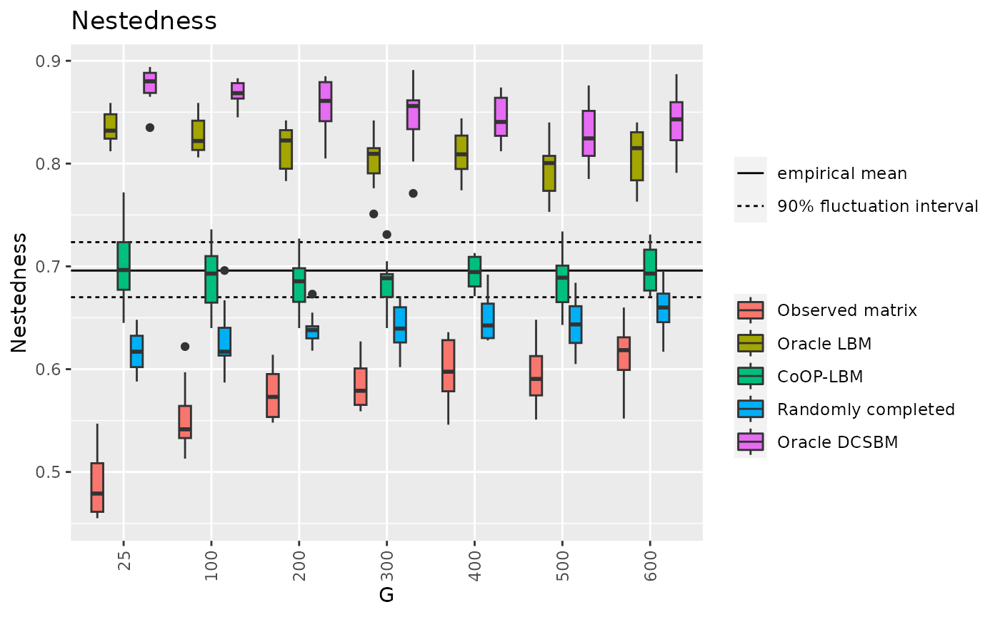
df7 = result[c("G","MOD_V","MOD_LBM","MOD_CoOP","MOD_Random","MOD_DCSBM")]
MOD_q05 = quantile(result$MOD_M,0.05)
MOD_mean = mean(result$MOD_M)
MOD_q95 = quantile(result$MOD_M,0.95)
d7 = data.frame(m=c(MOD_q05,MOD_mean ,MOD_q95 ))
df7_long <- melt(df7, id.vars=c("G"))
p11 <- ggplot(df7_long, aes(x=factor(G),y=value,fill=variable))+
geom_hline(data=d7,aes(yintercept = m,linetype=c("b","a","b")))+
geom_boxplot() +
theme(axis.text.x = element_text(angle = 90, vjust = 0.5, hjust=1)) +
ggtitle("Modularity")+
scale_fill_discrete(labels = c("Observed matrix","Oracle LBM","CoOP-LBM","Randomly completed","Oracle DCSBM"))+
guides(fill=guide_legend(title="")) + labs(color="",shape="",y="Modularity",x="G")+
labs(linetype="")+
scale_linetype_discrete( labels=c("empirical mean","90% fluctuation interval"))
p11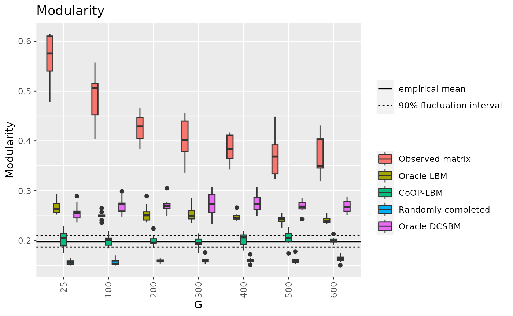
df8 = result[c("G","rob_LBM","rob_LBM_corrected","rob_CoOP")]
df8_long <- melt(df8, id.vars=c("G"))
rob_mean = mean(result$rob_M)
p12 <- ggplot(df8_long, aes(x=factor(G),y=value,fill=variable))+
geom_hline(aes(yintercept=rob_mean,linetype="Theoretical mean"))+
geom_boxplot() + theme(axis.text.x = element_text(angle = 90, vjust = 0.5, hjust=1))+
ggtitle("Robustness")+
scale_fill_discrete(labels = c("LBM","Oracle LBM","CoOP-LBM"))+
labs(color="",shape="",y="Robustness",x="G")+
guides(fill=guide_legend(title=""),linetype=guide_legend(title="") )
p12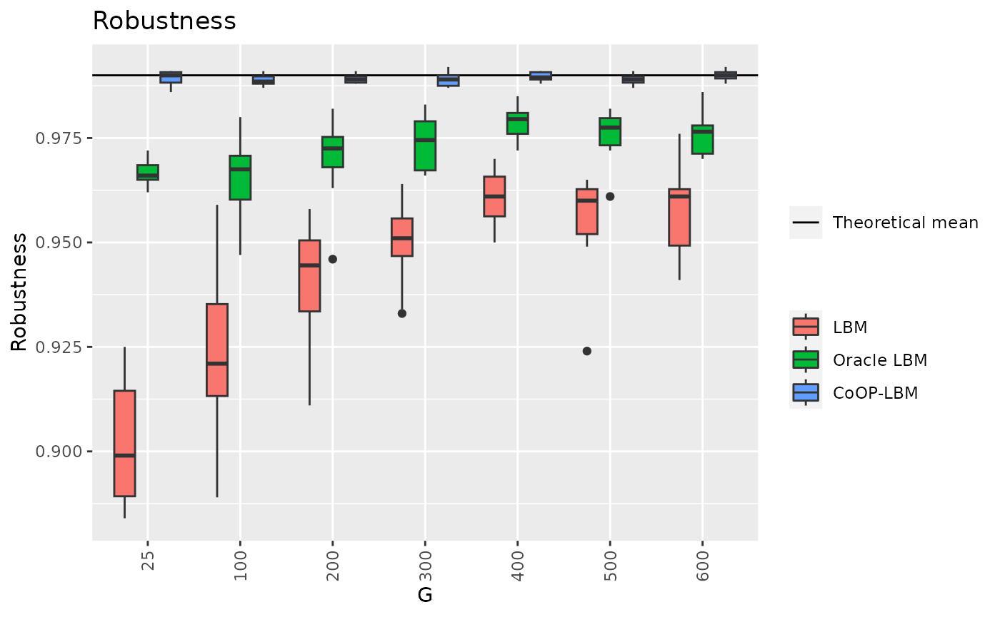
df9 = result[c("G","AUC_LBM","AUC_CoOP","AUC_DCSBM")]
df9_long <- melt(df9, id.vars=c("G"))
p13 <- ggplot(df9_long, aes(x=factor(G),y=value,fill=variable))+
geom_boxplot() + theme(axis.text.x = element_text(angle = 90, vjust = 0.5, hjust=1)) + ggtitle("AUC for missing data")+scale_fill_discrete(labels = c("LBM","CoOP-LBM","DCSBM")) + guides(fill=guide_legend(title=""))+labs(y="AUC",x="G")
p13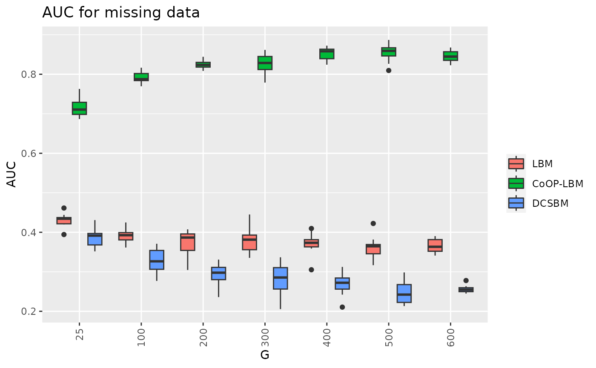
df10 = result[c("G","RMSE_lambda","RMSE_mu")]
df10_long <- melt(df10, id.vars=c("G"))
p14 <- ggplot(df10_long, aes(x=factor(G),y=value,fill=variable))+
geom_boxplot() + theme(axis.text.x = element_text(angle = 90, vjust = 0.5, hjust=1)) + ggtitle("RMSE of lambda and mu") + scale_fill_discrete(labels = c("Lambda","Mu"))+labs(y="RMSE",x="G")+ guides(fill=guide_legend(title=""))
p14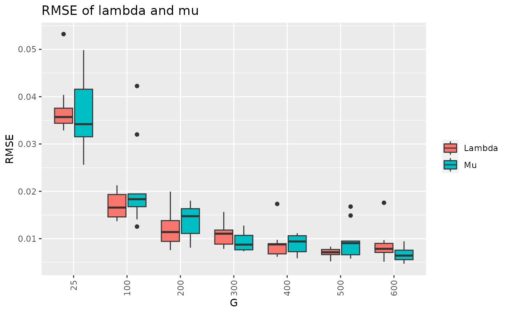
df11 = result[c("G","G_CoOP")]
df11_long <- melt(df11, id.vars=c("G"))
p11 <- ggplot(df11_long, aes(x=factor(G),y=value,fill=variable))+
geom_boxplot() + theme(axis.text.x = element_text(angle = 90, vjust = 0.5, hjust=1)) + ggtitle("Estimation of G") +
scale_fill_discrete(labels = c("Estimated G"))+labs(x="G")+ guides(fill=guide_legend(title=""))
p11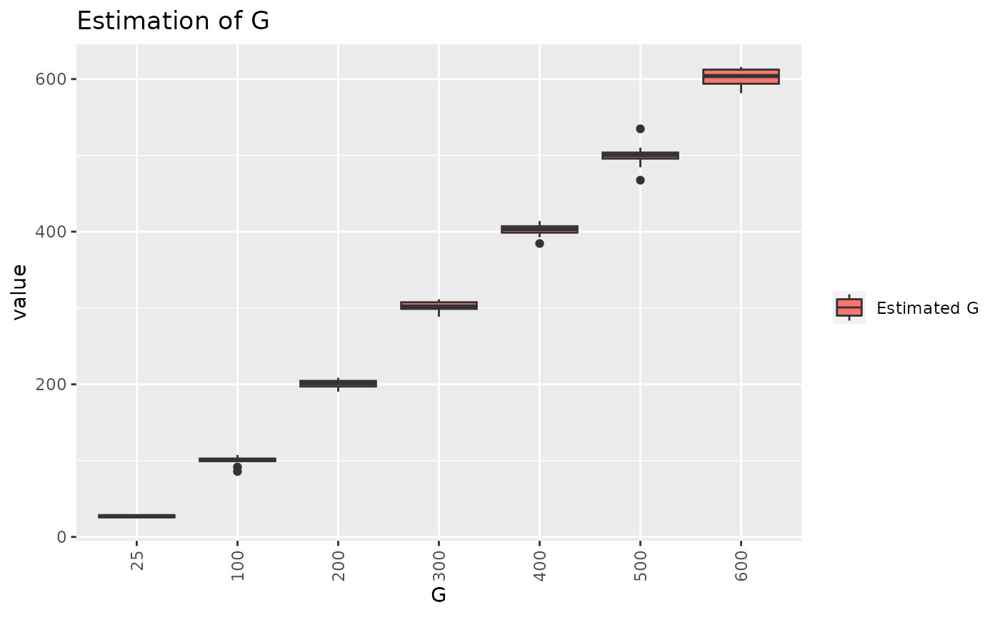